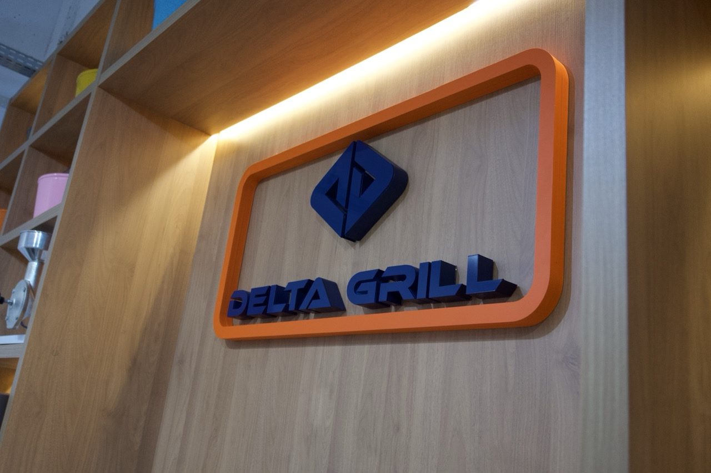

Serras fita
Espaco reservado para os manuais da linha de corte e suas variacoes por codigo.
A pagina organiza assistencia tecnica, manuais, pecas de reposicao e perguntas frequentes. Ela fica pronta para receber mais materiais sem refazer a navegacao.

Enquanto a rede completa nao e publicada, o mapa usa o atendimento da fabrica como ponto central. A mesma estrutura permite crescer estado por estado depois.
Se o cliente preferir uma pagina focada apenas em assistencia, ela ja existe tambem em assistencia.html.
O cliente comentou que quer manuais de todos os produtos. Como os PDFs ainda nao estao no repositorio, a pagina foi preparada por familia para receber os arquivos sem refazer o layout.
Espaco reservado para os manuais da linha de corte e suas variacoes por codigo.
Area pronta para receber os manuais dos modelos 1079, 1080, 1081 e futuras variantes.
Bloco preparado para os manuais das linhas de processamento mais procuradas.
Secao reservada para os codigos 1068, 1082, 1083, 1084, 1085 e 1086.
Area pronta para a documentacao assim que as linhas forem liberadas comercialmente.
Enquanto os manuais individuais sao consolidados, o catalogo completo ja fica disponivel para apoio comercial e navegacao.
Como a Delta Grill ainda vai elaborar esse texto, a pagina foi estruturada com os temas mais provaveis para facilitar a proxima entrega.
Espaco reservado para explicar prazo, acionamento e condicoes da garantia de fabrica.
Espaco reservado para duvidas sobre chave seletora, fase e cuidados basicos de instalacao.
Espaco reservado para orientar como localizar o manual correto para cada produto.
Espaco reservado para regras de compra, identificacao de pecas e abertura de suporte.